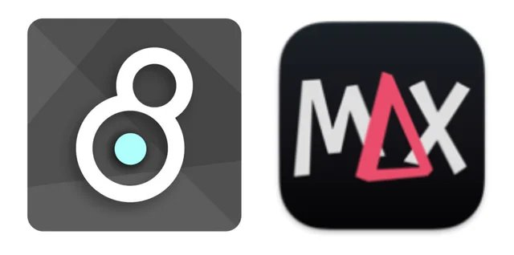

Introduction to Max

Patched by TeAiris Majors
What Is Max?
Max is a visual programming environment for creating:
- Music
- Synthesis
- Sound design
- Interactive systems
- Gesture-based interaction
- Audio-Visual
Instead of writing lines of code, you build systems by connecting objects with patch cords.
Demo Project - Virtual DJ Rig
Checkpoint 1 — Create a Project and Patch
Working inside of a project helps keep things organized and all dependencies together.
Steps:
- Open Max
- Click File, New Project
- Name the Project clearly (example: Intro_Max_YourName)
- Click File, New Patcher
Max Canvas (Patcher Window)
- The canvas where you place and connect objects
- Contains objects, UI elements, and patch cords
Tool Bar and Creating Objects (Shortcuts)
Top Tool Bar
The top toolbar contain many common objects you may need while programming in Max. These could be for interaction, functional, or UI purposes
Creating Objects (Shortcuts)
| Action |
Shortcut |
| New object |
n |
| Message box |
m |
| Comment |
c |
| Integer box |
i |
| Float box |
f |
| Lock / Unlock |
Cmd / Ctrl + E |
Types of Objects
Data (Message-Rate) Objects
Used for numbers, control, and logic.
Common examples:
- message
- int
- float
- button
- toggle
Signal (Audio-Rate) Objects
Used for sound and audio processing and end with a ~
Examples:
- cycle~
- ezadc~
- ezdac~
- gain~
Max for Live Objects
Some objects are designed specifically for Max for Live.
These objects are useful because they can connect directly to Ableton Live parameters and be automated as well
Examples include:
- live.dial
- live.slider
- live.gain~
- live.toggle
These objects can be used in Max as normal also.
Edit vs Locked Mode
- Cmd + E (Mac) or Ctrl + E (Windows)
- Unlocked: build and edit
- Locked: interact and perform
Inspector
The Inspector shows properties for the currently selected object. Using the Inspector you can edit an objects p
- Settings and Attributes
- Adjust colors and appearance
Using the top tabs can help filter through what you may need to edit.
Reference
- Reference: shows documentation for the selected object
Object Help Files
Max includes built-in help files for mostly every object.
They are fully working patches and are one of the best ways to learn how to use Max objects in context.
To open a help file:
- Hold Alt (Option on Mac)
- Click on an object
Flow
Patch Cords and Inlets
- Patch cords carry data or audio
- Direction matters
- Left inlet: hot (triggers action)
- Right inlet: cold (sets values only)
Execution Order
- Messages execute right to left
- Math evaluates left to right
If something behaves incorrectly check your objects position.
Max is fast so you may not see it happening!
Value
- Value - can be used to store and access a number anywhere in a patch
Playlist
- Plays audio files
- Supports multiple files and looping
- Useful for sample banks and cue-based playback
Live.grid
- Interactive grid interface for step sequencing and matrix control
- Supports multiple columns and rows for pattern programming
- Useful for creating drum patterns, note sequences, and visual control interfaces
Counter
- Steps through a series of numbers
- Controllable start, end, and direction
- Useful for creating sequences and patterns
- Can be used with lists to cycle through values
Checkpoint 2 — Flow and Triggering
- Using the objects we've learned so far, create create a trigger based drum machine
- Use keyboard input to map numbers to buttons
Extending the Drum Machine
- Using [live.grid], [tempo], and [counter] create a drum sequencer
- What if you use different counters?
Audio Input and Output
Output
- dac~ sends sound to your speakers
- ezdac~ sends sound to your speakers and includes an on/off toggle
Input
- adc~ receives sound from a microphone or input
- ezacd~ receives sound from a microphone or inputand includes an on/off toggle
Playlist
- Plays audio files
- Supports multiple files and looping
- Useful for sample banks and cue-based playback
Monitoring
Visual
Checkpoint 3 — Using Sound as a Control
- Use an object to receive microphone input from your computer
- Use three ways visualizing your input
Oscillators and Wavetables
Oscillators generate sound by repeating waveforms.
Common types:
- cycle~ (sine wave)
- rect~ (square wave)
- tri~ (triangle wave)
- saw~ (saw wave)
They require:
- A frequency
- A connection to another signal object
Frequency and Pitch
Frequency
- Measured in Hertz (Hz)
- Higher frequency means higher pitch
MIDI to Frequency [mtof]
- mtof converts MIDI note numbers to frequency values
Scaling Values
Scale
Scale maps one numeric range to another.
Example:
scale 0 127 100 1000
Used for:
- Sliders
- MIDI controllers
- Parameter mapping
Gain
- Controls signal amplitude
- Uses decibels
Live Gain (live.gain~)
- Max for Live–style gain control
- Provides visual metering and fader-style control
- Commonly used in performance patches and Ableton Live integration
Always control volume before the output!
Load Bang
- fires a bang when loading the patch for the first time
Send and Receive (s … r …)
- Can be used to send messages or signals through the patch
- Must be named the same
- Ex: [s myValue] [r myValue]
Routing and Switching
Routing objects decide where data goes or which data is allowed through.
Gate
- One inlet, multiple outlets
- Chooses which outlet receives the incoming data
- Controlled by an index or control value
Gate is used when you want to send one stream of data to different destinations.
Switch / Gswitch
- Multiple inlets, one outlet
- Chooses which inlet is allowed through
- Gswitch works with both data and audio
Switching is used when you have multiple possible inputs and want to choose which one is active.
Checkpoint 5 — Synthesis
- Create a synth sound using 3 oscillators
- Chose a blended sound, or switchable sound.
Extending the Synth
Building a Simple Synth
1. Pitch control (KSlider)
2. Mtof
3. Oscillator
4. Gain or live.gain~
5. Output
Additions:
- Metro
- Gate for waveform selection
Timing and Control
Metro
- Generates regular bangs
- Used for timing and repetition
- Often controlled by a toggle
Tempo
- Can be used to interact beats at a specific tempo or time division
Transport
Counter and Lists (Arpeggiation)
A simple arpeggiator can be built using a counter and a list.
- counter steps through a series of numbers
- coll or list stores pitch values
- The counter index is used to read values from the list
This allows you to:
- Cycle through pitches
- Create repeating patterns
- Build simple arpeggiators
Common objects used:
Object Reference
Data and Control
| message |
Sends values or commands. Often used to store or trigger information. |
| int |
Stores and outputs integer values. |
| float |
Stores and outputs floating-point numbers. |
| number |
A UI object that displays and outputs numbers. |
| slider |
A graphical control used to send changing numeric values. |
| button |
Outputs a bang when clicked. Used to trigger actions. |
| toggle |
Outputs 0 or 1. Used for on/off control. |
| line |
Generates smooth value changes over time. Often used for envelopes or gradual transitions. |
Timing and Flow
| metro |
Outputs bangs at regular time intervals. |
| gswitch |
Routes data or audio between multiple inputs. |
| change |
Only outputs when the input value changes from the previous value. |
| counter |
Steps through a series of numbers with controllable start, end, and direction. |
| tempo |
Controls timing based on tempo (BPM) and time divisions. |
Audio and Signal
| cycle~ |
Sine wave oscillator. |
| rect~ |
Square wave oscillator. |
| tri~ |
Triangle wave oscillator. |
| gain~ |
Controls audio volume. |
| live.gain~ |
Max for Live-style gain control with visual metering and fader. |
| meter~ |
Displays audio signal level. |
| adc~ |
Audio input from microphone or interface. |
| dac~ |
Audio output to speakers. |
| ezdac~ |
Audio output with built-in on/off toggle. |
Pitch and Mapping
| mtof |
Converts MIDI note numbers into frequency values. |
| scale |
Maps values from one numeric range to another. |
Playback and Sequencing
| playlist~ |
Plays audio files and supports looping. |
| live.grid |
Interactive grid interface for step sequencing and matrix control. |